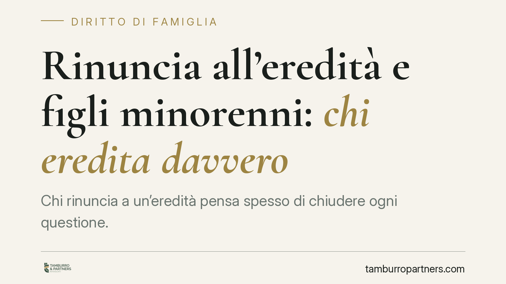

Rinuncia all'eredità e figli minorenni: chi eredita davvero
Chi rinuncia a un'eredità pensa spesso di chiudere ogni questione. Non è così quando ha figli minorenni: la quota non torna agli altri parenti in linea diretta, ma passa ai discendenti per rappresentazione. Il meccanismo coinvolge il giudice tutelare e impone scelte ponderate. Vediamo come funziona e cosa fare per non commettere errori irreversibili.

Il caso tipico
Un genitore riceve la chiamata all'eredità di un proprio ascendente. L'eredità appare gravata da debiti, o comunque poco conveniente. La reazione istintiva è rinunciare, immaginando che la quota passi automaticamente agli altri chiamati adulti (ad esempio il coniuge superstite del defunto).
La realtà giuridica è diversa. Se il rinunciante ha figli, sono questi ultimi a subentrare nella sua posizione. Quando i figli sono minorenni, la vicenda si complica e richiede l'intervento dell'autorità giudiziaria.
Inquadramento normativo
La rinuncia all'eredità è disciplinata dall'art. 519 del codice civile: deve avvenire con dichiarazione ricevuta da un notaio o dal cancelliere del tribunale competente. È un atto formale e, in linea di massima, revocabile solo entro limiti precisi.
Chi rinuncia viene considerato come se non fosse mai stato chiamato all'eredità. A questo punto opera l'art. 467 c.c., che disciplina la rappresentazione: i discendenti subentrano nel luogo e nel grado del loro ascendente rinunciante. In altre parole, la quota che il genitore ha rifiutato non si redistribuisce tra gli altri eredi di pari grado, ma "scende" verso i figli.
Se i figli sono minorenni, la decisione su accettare o rifiutare l'eredità a loro nome non è libera per il genitore. L'accettazione deve avvenire con beneficio d'inventario e, tanto per l'accettazione quanto per l'eventuale ulteriore rinuncia, occorre l'autorizzazione del giudice tutelare, chiamato a valutare l'interesse del minore.
Un chiarimento sulle polizze vita
Merita attenzione un punto spesso frainteso. Le somme derivanti da una polizza vita, ai sensi dell'art. 1920 c.c., non entrano nell'asse ereditario. Il beneficiario acquista un diritto proprio, che nasce dal contratto assicurativo e non dalla successione.
La conseguenza è pratica: chi rinuncia all'eredità non perde il diritto di percepire la somma della polizza di cui sia beneficiario. I due piani – successorio e assicurativo – restano distinti.
Implicazioni pratiche
Per il genitore che intende rinunciare, questo significa che la rinuncia non è mai un gesto isolato. Rifiutare l'eredità per sé apre automaticamente la questione della posizione dei figli minorenni.
Se l'eredità è realmente svantaggiosa – ad esempio perché carica di debiti – occorre valutare se rinunciare anche per conto dei minori, previa autorizzazione del giudice tutelare. Diversamente, i figli rischiano di trovarsi eredi di un patrimonio in perdita.
Se invece l'eredità è conveniente ma il genitore rinuncia per ragioni proprie, la rappresentazione può risultare vantaggiosa per i figli: in tal caso l'accettazione con beneficio d'inventario, autorizzata dal giudice, protegge il minore limitando la responsabilità ai beni ereditati.
Un errore ricorrente è pensare che la rinuncia sposti la quota su un altro adulto della famiglia (come la madre dei minori). Non accade: la linea di discendenza prevale.
Cosa fare in concreto
- Ricostruisci l'attivo e il passivo dell'eredità prima di qualsiasi decisione: verifica debiti, beni immobili, mutui e cause pendenti.
- Non rinunciare d'istinto: valuta l'effetto sui figli minorenni, perché la tua rinuncia li chiama in causa per rappresentazione.
- Per accettare o rinunciare a nome dei minori, presenta istanza al giudice tutelare: l'accettazione va sempre fatta con beneficio d'inventario.
- Verifica la posizione delle polizze vita separatamente: se sei beneficiario, il diritto è tuo e resta fuori dall'eredità.
- Rispetta le forme e i termini: la dichiarazione di rinuncia va resa davanti a notaio o cancelliere, e i tempi processuali incidono sulla validità dell'atto.
Conclusione
La rinuncia all'eredità non è mai una scelta neutra quando ci sono figli minorenni. È un atto che va inquadrato nell'intera catena successoria e coordinato con l'autorizzazione del giudice tutelare. Consigliamo di affrontarlo con una valutazione preventiva, per evitare che una decisione presa in fretta si traduca in conseguenze irreversibili per i minori.
---
*Contributo informativo a cura di Tamburro & Partners - Avv. Giuseppe Tamburro. Non costituisce parere legale.*
Ogni famiglia ha il suo equilibrio.
Separazione, divorzio, affidamento, assegno: se vuoi un confronto riservato su una specifica situazione, scrivi allo studio. Ti rispondiamo entro un giorno lavorativo.